使用PostGIS实现最短路径服务
一、下载和安装
PGRouting要配合PostgreSQL和Postgis使用，所以安装PGRouting之前要先安装PostgreSQL和Postgis，它们的官网地址分别是：
PostgreSQL http://www.postgresql.org/
Postgis http://www.postgis.net/
PGRouting http://pgrouting.org/ github https://github.com/pgRouting/pgrouting
另外在安装好PostgreSQL之后，程序本身会提供一个工具Application Stack Builder，我们也可以在这个工具中下载对应版本的Postgis。
PostgreSQL和Postgis在windows下的安装相对简单，在这里说一下PGRouting的安装。
在官网下载和本机PostgreSQL对应版本的PGRouting，我这里的版本的PostgreSQL 9.1，这个版本可以使用的PGRouting对应版本是2.0。
下面贴一下我的PosggreSQL和PostGIS 和pgRouting的版本
PostgreSQL下载地址 http://www.postgresql.org/download/
PostGIS 下载地址 http://download.osgeo.org/postgis/windows/ http://download.osgeo.org/postgis/windows/pg92/archive/
pgRouting下载地址 http://pgrouting.org/download.html#windows-binaries http://postgis.net/windows_downloads http://winnie.postgis.net/download/windows/pg92/buildbot/ http://winnie.postgis.net/download/windows/
各版本兼容情况
http://postgis.net/windows_downloads
http://pgrouting.org/download.html
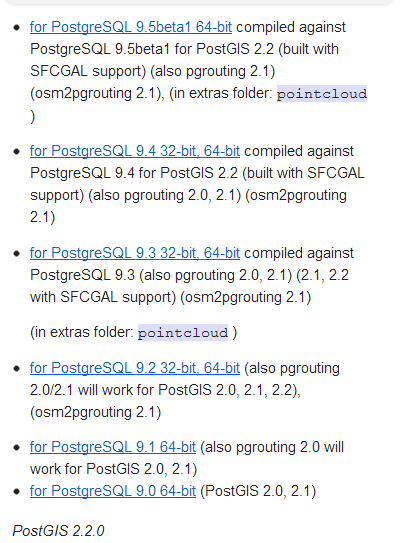
下载PGRouing之后，可以看到里面有3个文件夹（bin、lib、share）和5个文件，以后可能会有变动，将这三个文件夹拷贝到PostgreSQL的安装目录下，和同名文件夹合并。
然后执行一遍share里面的sql,
具体方法:
点击这个sql查询按钮
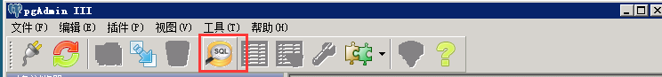
弹出如下窗口,选择刚才几个的sql语句,都执行一遍
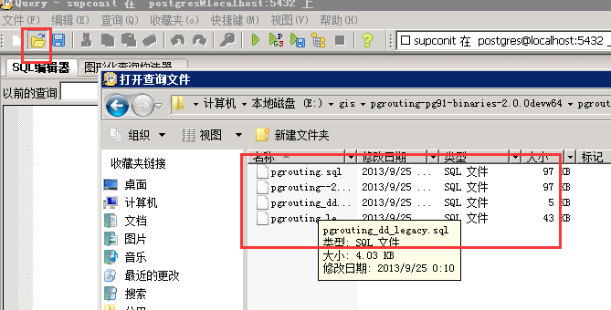
点击如下所示按钮执行sql语句
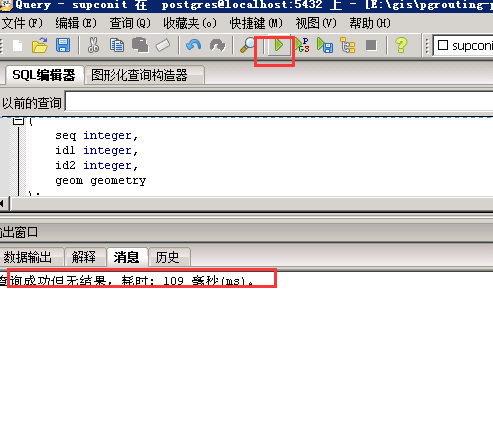
执行完这些后PostgreSQL就具备了最短路径分析的功能
导入shp数据
这个之前有写,需要注意四项:1新建数据库时选择PostGIS提供的模板,2编码选择GBK,3还有shp数据不要有中文路径
4把这个勾上
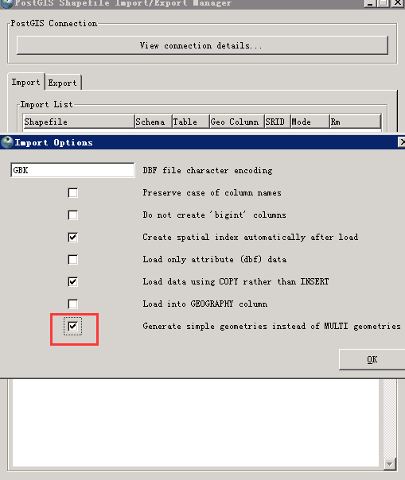
此处导入的shp数据一定要是单线的，否则无法完成路径计算。
创建路网拓扑结构
ALTER TABLE public.bjroad ADD COLUMN source integer;//添加起点id
ALTER TABLE public.bjroad ADD COLUMN target integer;//添加终点id
ALTER TABLE public.bjroad ADD COLUMN mlength double precision;//添加道路 权重值 这里长度就是权重了
这里先介绍一个Pgrouting的函数：pgr_createTopology，这个函数就是将我们的路网（线型）数据形成拓扑导航网络的数据，为下一步的导航路径算法提供支持SELECT pgr_createTopology('public.bjroad',0.00001, 'geom', 'gid');//创建拓扑布局，即为source和target字段赋值
详见 http://docs.pgrouting.org/2.0/en/src/common/doc/functions/create_topology.html#pgr-create-topology
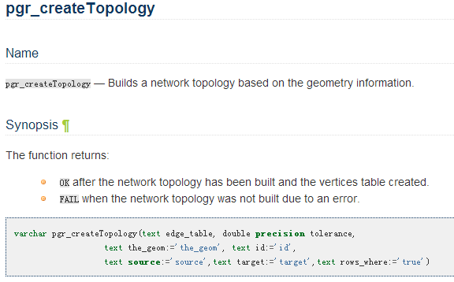
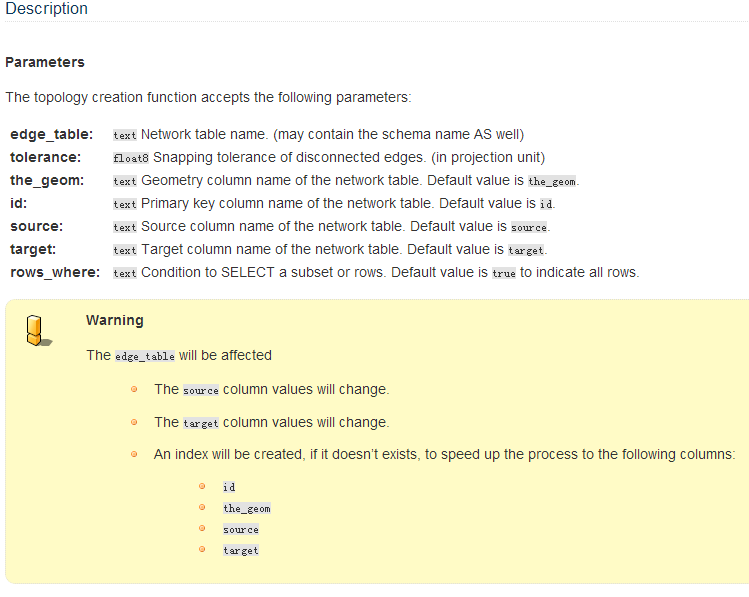
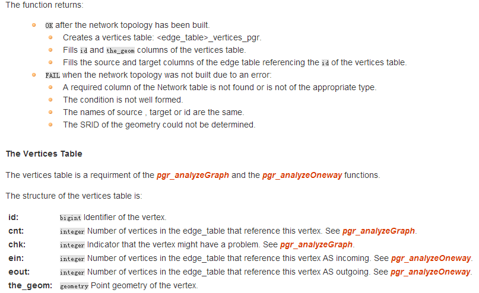
为source和target字段创建索引CREATE INDEX source_idx ON bjroad("source");CREATE INDEX target_idx ON bjroad("target");
为mlength赋值update bjroad set mlength =st_length(geom);
为bjroad表添加reverse_cost字段并用mlength的值赋值
ALTER TABLE bjroad ADD COLUMN reverse_cost double precision;UPDATE bjroad SET reverse_cost = length;
尝试查询
查询从30号点到60号点的最短路径1
2
3
4
5
6
7
8
9
10
11
12
13SELECT seq, id1 AS node, id2 AS edge, cost FROM pgr_dijkstra('
SELECT gid AS id,
source::integer,
target::integer,
length::double precision AS cost
FROM bjroad',
30, 60, false, false);
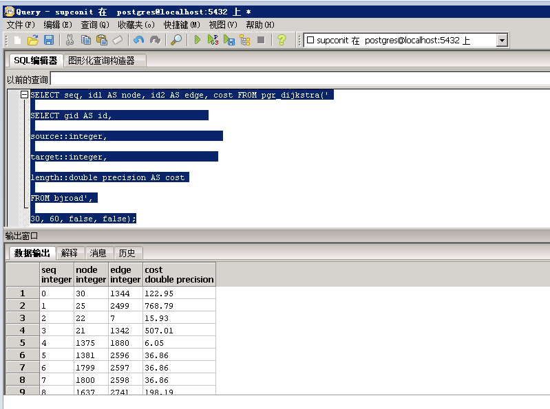
//查询每个路段经过的点1
2
3
4
5
6
7
8
9
10
11
12
13
14
15
16
17SELECT st_astext(geom) FROM pgr_dijkstra('
SELECT gid AS id,
source::integer,
target::integer,
length::double precision AS cost
FROM bjroad',
30, 60, false, false) as di
join bjroad pt
on di.id2 = pt.gid;
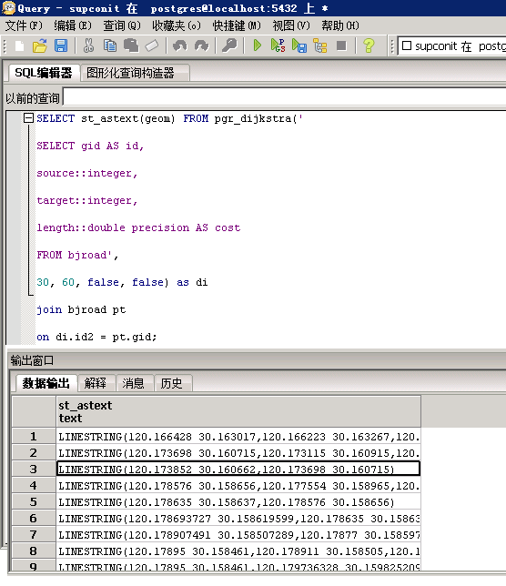
//把查询结果放在新建的表格中dijkstra_res就是新建的表1
2
3
4
5
6
7
8
9
10
11
12
13
14
15
16
17SELECT seq, id1 AS node, id2 AS edge, cost,geom into dijkstra_res FROM pgr_dijkstra('
SELECT gid AS id,
source::integer,
target::integer,
length::double precision AS cost
FROM bjroad',
30, 60, false, false) as di
join bjroad pt
on di.id2 = pt.gid;
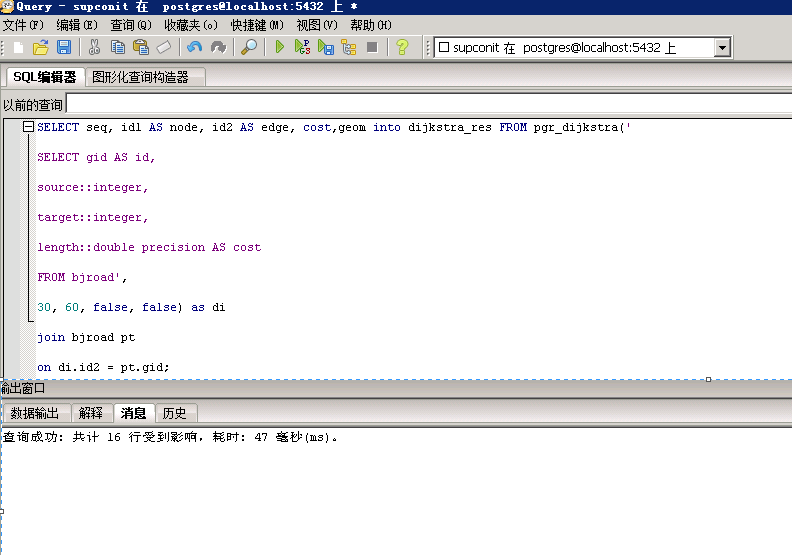
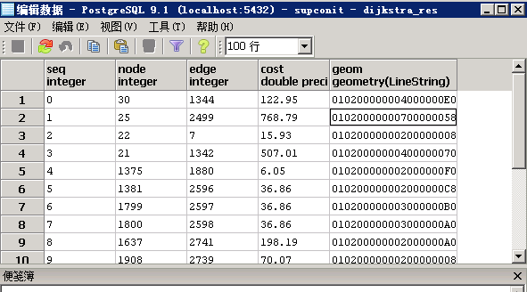
1 |
|
将这个表导出为shp，再在arcmap中定义坐标系打开，可以看到上面的结果如下图所示
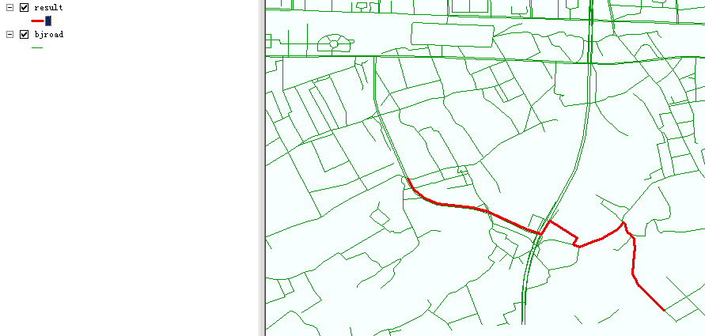
前面介绍了如何利用postgresql创建空间数据库，建立空间索引和进行路径规划。但是在真实的场景中用户进行路径规划的时候都是基于经纬度数据进行路径规划的，因为用户根本不会知道道路上节点的ID。因此接下来讲述如何查询任意两点间的最短路径。
一、定义函数名及函数参数
函数名定义为： pgr_fromAtoB
参数设置分别为：
输入为数据库表名，起点和终点的经纬度坐标
输出为：路段序号，gid号，道路名，消耗及道路集合体。1
2
3
4
5
6
7
8
9
10
11IN tbl varchar, --数据库表名
IN x1 double precision, --起点x坐标
IN y1 double precision, --起点y坐标
IN x2 double precision, --终点x坐标
IN y2 double precision, --终点y坐标
OUT seq integer,
OUT gid integer,
OUT name text,
OUT heading double precision,
OUT cost double precision,
OUT geom geometry
二、计算距离起点和终点距离最近的道路节点，
可以使用的函数为1
2
3SELECT id::integer FROM minidata_vertices_pgr
ORDER BY the_geom <-> ST_GeometryFromText(''POINT('
|| x1 || ' ' || y1 || ')'',4326) LIMIT 1
三、然后根据检索到的节点再调用pgrouting的最短路径查询函数进行计算。
可以使用的函数为：
1 | SELECT gid, geom, name, cost, source, target, |
四、整合上面几个子过程，得到的最终查询sql函数如下：1
2
3
4
5
6
7
8
9
10
11
12
13
14
15
16
17
18
19
20
21
22
23
24
25
26
27
28
29
30
31
32
33
34
35
36
37
38
39
40
41
42
43
44
45
46
47
48
49
50
51
52
53
54
55
56
57
58
59
60
61
62
63
64
65
66
67
68
69
70
71
72
73
74
75
76
77
78
79
80
81
82--
--DROP FUNCTION pgr_fromAtoB(varchar, double precision, double precision,
-- double precision, double precision);
CREATE OR REPLACE FUNCTION pgr_fromAtoB(
IN tbl varchar,
IN x1 double precision,
IN y1 double precision,
IN x2 double precision,
IN y2 double precision,
OUT seq integer,
OUT gid integer,
OUT name text,
OUT heading double precision,
OUT cost double precision,
OUT geom geometry
)
RETURNS SETOF record AS
$BODY$
DECLARE
sql text;
rec record;
source integer;
target integer;
point integer;
BEGIN
-- 查询距离出发点最近的道路节点
EXECUTE 'SELECT id::integer FROM minidata_vertices_pgr
ORDER BY the_geom <-> ST_GeometryFromText(''POINT('
|| x1 || ' ' || y1 || ')'',900913) LIMIT 1' INTO rec;
source := rec.id;
-- 查询距离目的地最近的道路节点
EXECUTE 'SELECT id::integer FROM minidata_vertices_pgr
ORDER BY the_geom <-> ST_GeometryFromText(''POINT('
|| x2 || ' ' || y2 || ')'',900913) LIMIT 1' INTO rec;
target := rec.id;
-- 最短路径查询
seq := 0;
sql := 'SELECT gid, geom, name, cost, source, target,
ST_Reverse(geom) AS flip_geom FROM ' ||
'pgr_bdAstar(''SELECT gid as id, source::int, target::int, '
|| 'length::float AS cost,x1,y1,x2,y2 FROM '
|| quote_ident(tbl) || ''', '
|| source || ', ' || target
|| ' ,false, false), '
|| quote_ident(tbl) || ' WHERE id2 = gid ORDER BY seq';
-- Remember start point
point := source;
FOR rec IN EXECUTE sql
LOOP
-- Flip geometry (if required)
IF ( point != rec.source ) THEN
rec.geom := rec.flip_geom;
point := rec.source;
ELSE
point := rec.target;
END IF;
-- Calculate heading (simplified)
EXECUTE 'SELECT degrees( ST_Azimuth(
ST_StartPoint(''' || rec.geom::text || '''),
ST_EndPoint(''' || rec.geom::text || ''') ) )'
INTO heading;
-- Return record
seq := seq + 1;
gid := rec.gid;
name := rec.name;
cost := rec.cost;
geom := rec.geom;
RETURN NEXT;
END LOOP;
RETURN;
END;
$BODY$
LANGUAGE 'plpgsql' VOLATILE STRICT;
但是上面查询任意两点间最短路径的函数，是由于当时对pgrouting不熟悉，功能很low。现在对该函数进行扩展，支持用户自己输入查询的数据库表，这一点看似简单，其实意义很大，在做室内导航的时候当用户所在的楼层变化的时候最短路径函数查询的数据表名称也会发生变化，不可能一栋大楼里的道路都是一样的吧，另外进行跨楼层的最短路径规划时，需要查询从A到楼梯口的最短路径和楼梯口到B的最短路径，这些都需要进行最短路径规划的时候能够自己选择数据表。
先解释一下最短路径规划的处理步骤，首先要确定用户的出发点和目的地所在的道路，再在相应的道路上确定道路的节点，查找这两个节点之间的最短路径，最后再处理出发点和目的地到道路节点之间的路段。具体过程为：
查找距离用户出发点最近的道路和该道路的终点T。
查找距离用户目的地最近的道路和该道路的起点S。
计算前两步找出的两点之间的最短路径。
处理出发点和道路终点T以及目的去和道路起点S之间的路段。
1 | DROP FUNCTION pgr_fromAtoB(tbl varchar,startx float, starty float,endx float,endy float); |
使用这个最短路径规划函数进行路径规划一般不会出现问题，但是有的时候会出现这样的问题，因为函数的查找思路是查找距离起点最近的线和改线的终点，查找离目的地最近的线和该线的起点，这样有可能会出现这样的情况，就是起点和终点对应的线段是相连接的，这时查找的距离起点最近线的终点和距离目的地最近线上的起点就是同一个点，这样的话这两点直接就没有最短距离。
所以需要对上述代码第59到61行进行修改，修改后的代码如下
最终使用的函数1
2
3
4
5
6
7
8
9
10
11
12
13
14
15
16
17
18
19
20
21
22
23
24
25
26
27
28
29
30
31
32
33
34
35
36
37
38
39
40
41
42
43
44
45
46
47
48
49
50
51
52
53
54
55
56
57
58
59
60
61
62
63
64
65
66
67
68
69
70
71
72
73
74
75
76
77
78
79
80
81
82
83
84DROP FUNCTION pgr_fromAtoB(tbl varchar,startx float, starty float,endx float,endy float);
CREATE OR REPLACE function pgr_fromAtoB(tbl varchar,startx float, starty float,endx float,endy float)
returns geometry as
$body$
declare
v_startLine geometry;--离起点最近的线
v_endLine geometry;--离终点最近的线
v_startTarget integer;--距离起点最近线的终点
v_endSource integer;--距离终点最近线的起点
v_statpoint geometry;--在v_startLine上距离起点最近的点
v_endpoint geometry;--在v_endLine上距离终点最近的点
v_res geometry;--最短路径分析结果
v_perStart float;--v_statpoint在v_res上的百分比
v_perEnd float;--v_endpoint在v_res上的百分比
v_shPath geometry;--最终结果
tempnode float;
begin
--查询离起点最近的线
execute 'select geom ,target from ' ||tbl||
' where
ST_DWithin(geom,ST_Geometryfromtext(''point('|| startx ||' ' || starty||')''),15)
order by ST_Distance(geom,ST_GeometryFromText(''point('|| startx ||' '|| starty ||')'')) limit 1'
into v_startLine ,v_startTarget;
--查询离终点最近的线
execute 'select geom,source from ' ||tbl||
' where ST_DWithin(geom,ST_Geometryfromtext(''point('|| endx || ' ' || endy ||')''),15)
order by ST_Distance(geom,ST_GeometryFromText(''point('|| endx ||' ' || endy ||')'')) limit 1'
into v_endLine,v_endSource;
--如果没找到最近的线，就返回null
if (v_startLine is null) or (v_endLine is null) then
return null;
end if ;
select ST_ClosestPoint(v_startLine, ST_Geometryfromtext('point('|| startx ||' ' || starty ||')')) into v_statpoint;
select ST_ClosestPoint(v_endLine, ST_GeometryFromText('point('|| endx ||' ' || endy ||')')) into v_endpoint;
--最短路径
execute 'SELECT st_linemerge(st_union(b.geom)) ' ||
'FROM pgr_kdijkstraPath(
''SELECT gid as id, source, target, mlength as cost FROM ' || tbl ||''','
||v_startTarget || ', ' ||'array['||v_endSource||'] , false, false
) a, '
|| tbl || ' b
WHERE a.id3=b.gid
GROUP by id1
ORDER by id1' into v_res ;
--如果找不到最短路径，就返回null
--if(v_res is null) then
-- return null;
--end if;
--将v_res,v_startLine,v_endLine进行拼接
select st_linemerge(ST_Union(array[v_res,v_startLine,v_endLine])) into v_res;
select ST_Line_Locate_Point(v_res, v_statpoint) into v_perStart;
select ST_Line_Locate_Point(v_res, v_endpoint) into v_perEnd;
if(v_perStart > v_perEnd) then
tempnode = v_perStart;
v_perStart = v_perEnd;
v_perEnd = tempnode;
end if;
--截取v_res
SELECT ST_Line_SubString(v_res,v_perStart, v_perEnd) into v_shPath;
return v_shPath;
end;
$body$
LANGUAGE plpgsql VOLATILE STRICT
将这个函数在PostgreSQL的sql查询工具中执行一遍就可以了
这时你在sql查询中输入SELECT * FROM pgr_fromatob('bjroad', x1, y1, x2, y2 )
或SELECT pgr_fromatob.geometry FROM pgr_fromatob('bjroad', x1, y1, x2, y2 )就可以查询到从点1到点2的路径了
最短路径规划中创建基于geoserver的wms服务
上面文章写了求任意两点间最短路径的sql函数，接下来讲一下如何把上面介绍的子功能整合到系统中去
单击左侧数据存储图标，会进入新建数据源页面
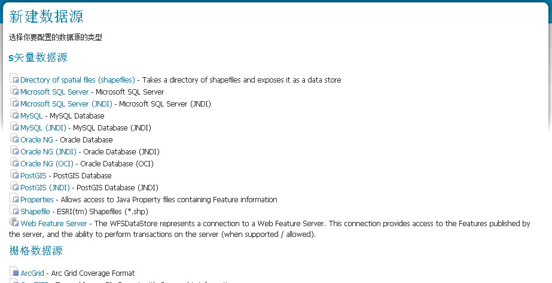
单击postgis，会弹出数据库的访问设置对话框
在对话框中选择工作区，填入数据源名称、数据库名以及用户名密码 点击保存
在弹出的新页面中单击配置新的SQL视图，
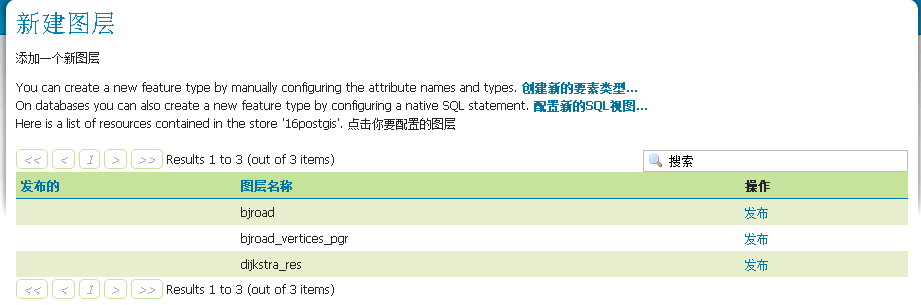
在出现的新页面中输入视图名称以及最短路径规划的查询sql语句（pgr_fromAtoB为自定义的查询函数，需要添加到postgresql中,上文已经将其添加进去了）
在出现的新页面中输入视图名称以及最短路径规划的查询sql语句（pgr_fromAtoB为自定义的查询函数，需要添加到postgresql中），1
2
3
4
5SELECT ST_MakeLine(route.geometry) FROM (
SELECT pgr_fromatob.geometry FROM pgr_fromatob('bjroad', %x1%, %y1%, %x2%, %y2% )
) AS route
单击从sql猜想的参数，把x1 y1 x2 y2的默认值都设为0，正则表达式中全部输入^-?[\d.]+$ 。最后点刷新按钮，在出现的st_makeline结果数据中选择其类型为linestring，坐标系为4326
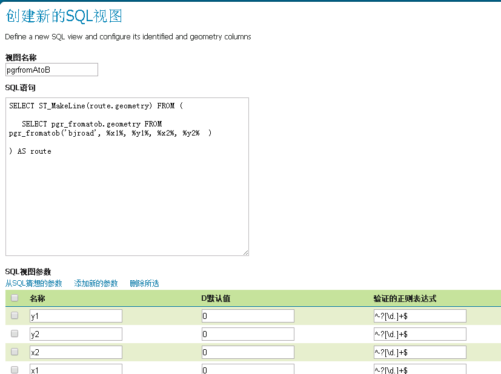
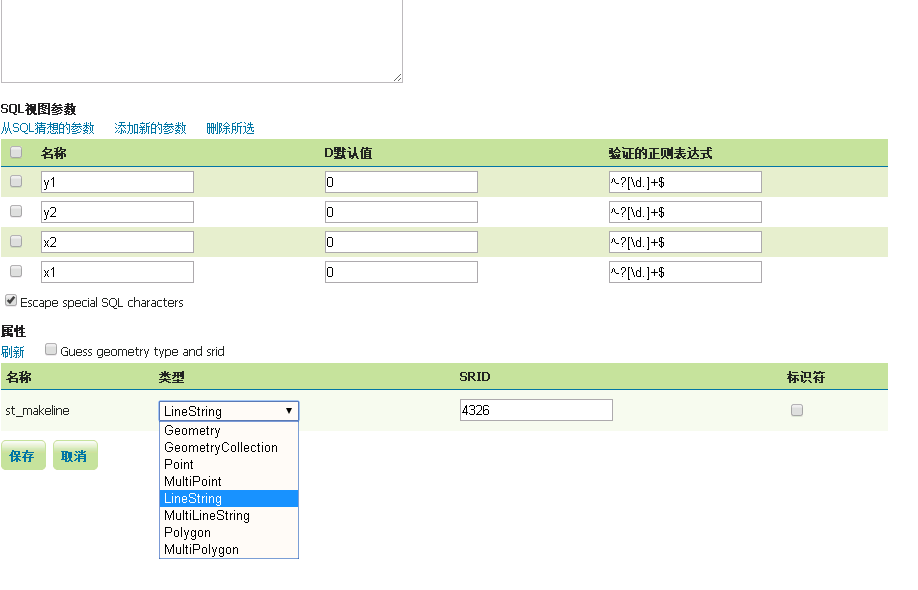
然后就像普通图层那样将其发布即可
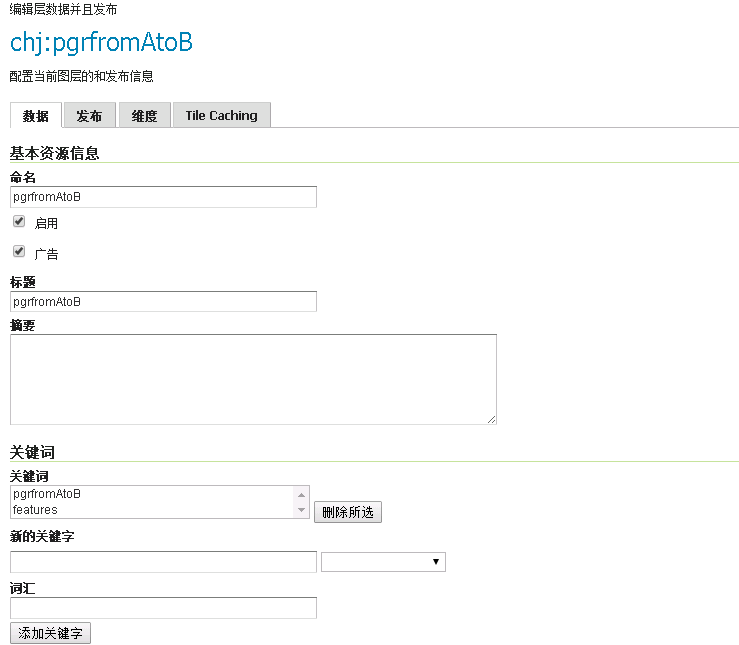
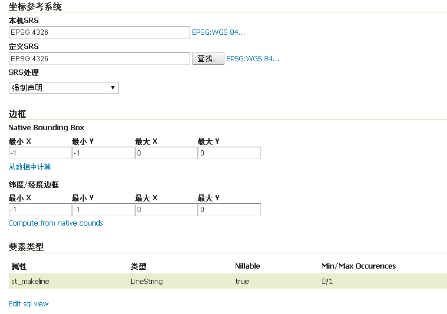
然后写代码就可以实现最短路径功能了
1 |
|
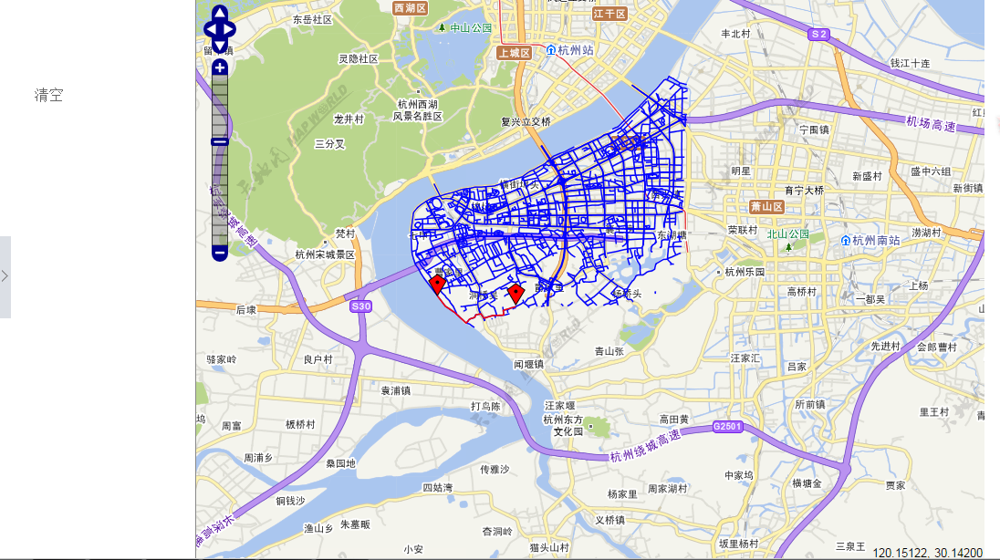
参考文献
http://blog.csdn.net/longshengguoji/article/details/45565551
http://blog.csdn.net/cehui115081/article/details/19808889
http://blog.csdn.net/longshengguoji/article/details/46051111
http://www.davidgis.fr/documentation/pgrouting-1.02/
http://blog.csdn.net/longshengguoji/article/details/46350355
http://blog.csdn.net/longshengguoji/article/details/46350675
http://www.openlayers.cn/forum.php?mod=viewthread&tid=14&page=1
http://blog.csdn.net/longshengguoji/article/details/45602219
http://blog.csdn.net/longshengguoji?viewmode=contents
http://blog.csdn.net/longshengguoji/article/details/46793111
http://blog.csdn.net/longshengguoji/article/details/45602219
http://blog.csdn.net/yifei1989/article/details/14137891
http://blog.csdn.net/yifei1989/article/details/9500187#comments
http://blog.csdn.net/yifei1989/article/details/14004661
http://blog.csdn.net/yifei1989/article/details/14137891